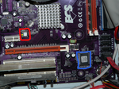

BIOS aktualisieren
Achtung!
Bei BIOS-Aktualisierungen ist besondere Vorsicht und Sorgfalt notwendig, denn sonst drohen Systemschäden. Durch ein falsches oder fehlerhaft aufgespieltes BIOS kann dieses zerstört werden. In der Folge wird der Rechner komplett unbrauchbar. Ein Update sollte nur durch erfahrene Nutzer durchgeführt werden.
Dieser Artikel wurde für die folgenden Ubuntu-Versionen getestet:
Dieser Artikel ist größtenteils für alle Ubuntu-Versionen gültig.
Zum Verständnis dieses Artikels sind folgende Seiten hilfreich:
Das BIOS stellt grundlegende Funktionen eines PCs zur Verfügung. Es verwaltet auf Hardware-Ebene die Komponenten des Rechners und ermöglicht das Laden eines Betriebssystems oder eines Bootmanagers. Eine Aktualisierung des BIOS (BIOS-Update) wird in der Regel notwendig, wenn das vorhandene BIOS Fehler aufweist oder bestimmte, meist neuere Hardwarekomponenten nicht oder nur unzureichend unterstützt werden. Fehler können zum Beispiel unzureichende Lüftersteuerung oder schlechte Energiesparmodi sein. Beschränkung von RAM-Grössen oder ähnlichem bedingen ebenfalls oft ein BIOS-Update.
Das Aufspielen (Flashen) einer neueren BIOS-Version birgt jedoch auch erhebliche Gefahren. Inkompatible BIOS/Mainboard-Kombinationen, fehlerhafte oder falsch konfigurierte BIOS-Updates sowie Störungen während des Flashens wegen Systemabstürzen und Stromausfall resultieren in nicht mehr funktionsfähigen Rechnern. Ein so beschädigtes BIOS lässt sich nur noch durch Austauschen des BIOS-Chips oder durch spezielle Rettungsprogramme reparieren.
Ein weiterer kritischer Punkt ist, dass die BIOS-Updates häufig nur für DOS/Windows verfügbar sind und daher auf reinen Linuxsystemen oft zu Mehraufwand führen.
Möglichkeiten¶
Windows Methode: Setzt ein natives Windows voraus, für reine Linux Systeme nicht geeignet. Von Experimenten mit Wine, VM oder Portable-Windows wird dringend abgeraten.
BIOS interne Methode: Sehr einfache und sichere, auch für Linux gut geeignete Methode, wird allerdings nicht von allen Mainboards unterstützt! Typische Handelsnamen sind GIGABYTE Q-Flash, MSI LIVE UPDATE oder INTEL F7 BIOS Flash Update.
Image Methode: Einfache und sichere, auch für Linux geeignete Methode
DOS-USB Methode: Abwandlung der ältesten Methode, benötigt ein bootfähiges DOS-Derivat auf einem beliebigen Medium (z. B. USB-Stick).
flashrom Methode: Aufspielen des BIOS-Updates mittels des Coreboottools "flashrom" (nur für Experten)
Ausweichen auf coreboot-BIOS: Das proprietäre BIOS wird nicht aktualisiert, sondern durch das des Corebootprojekts
 ersetzt. Es werden jedoch nicht alle Mainboards/Chipsets unterstützt (nur für Experten).
ersetzt. Es werden jedoch nicht alle Mainboards/Chipsets unterstützt (nur für Experten).
Vorbereitungen¶
Bevor man ein BIOS-Update durchführt, sollte geklärt werden, ob sich bestehende/auftretende Probleme nicht anderweitig lösen lassen. Das Motto "never change (stop) a running system" sollte vor allen weiteren Schritten bedacht werden. Einerseits besteht die Gefahr, dass das Update aus irgendeinem Grund fehlschlägt und damit ernsthaften Schaden angerichtet wird. Zweitens ist es nicht zwingend gegeben, dass das Update fehlerfrei ist und sich nur Verbesserungen aus der Aktualisierung resultieren. Die folgenden Schritte sollten vor jedem BIOS-Update durchgeführt werden:
Sammeln der relevanten Hardwareinformationen¶
Hardwareinformationen, die für ein korrektes BIOS-Update notwendig sind, lassen sich mit dmidecode unkompliziert auslesen. Ggf. muss das Paket:
dmidecode
 mit apturl
mit apturl
Paketliste zum Kopieren:
sudo apt-get install dmidecode
sudo aptitude install dmidecode
installiert werden. Ausführliche Informationen finden sich im Artikel dmidecode.
Beschaffung der Updates¶
Hinweis!
Zusätzliche Fremdquellen können das System gefährden.
Anmerkung: Hersteller BIOS-Updates in der Regel sind nicht quelloffen. Es kann daher keine Aussage zu Sicherheit und Funktionalität getroffen werden.
Grundsätzlich gilt: Die Angaben zu Mainboard und Chipset aus dmidecode müssen exakt(!) mit den Angaben zum neu zu installierenden BIOS übereinstimmen (Revisions-Nr. o. ä. beachten).
Bevor das BIOS-Update ausgewählt wird, sollte gründlich recherchiert werden, ob sich durch das BIOS-Update die bestehenden Probleme lösen lassen. In der Regel führen die Hersteller 'Changelogs' (Änderungslisten) in denen die neuen Funktionen oder beseitigten Fehler verzeichnet sind. Das Auswählen einer BIOS-Version, nur weil sie neuer ist, ist meist nicht zielführend. Es können neue Fehler auftauchen oder bestimmte Funktionen noch nicht implementiert sein, ohne das sich irgendwelche Verbesserungen ergeben.
Lässt sich durch ein angebotenes Update das bestehende Problem lösen, so kann dies beim Hersteller heruntergeladen und gespeichert werden. Vom Herunterladen aus Zweitquellen ist dringend abzuraten: Erstens kann es Kompatibilitätsprobleme geben und das System wird schwer beschädigt. Zweitens kann Schadcode eingefügt werden, der zu weiteren Problemen führt. Wenn beim Hersteller direkt installierbare Images oder bootfähige Images angeboten werden, sollte diesen der Vorzug gegeben werden.
Vorbereitungen zur Installation¶
Achtung!
Durch nicht zusammenpassende Hardware/BIOS-Kombinationen oder falsche Installationsumgebungen (Betriebssystem) drohen massive Schäden am BIOS. Die Updates müssen für die Hardware und in der Betriebssystemumgebung aufgespielt werden, für die sie vorgesehen sind.
Im Normalfall sollte entweder auf der Homepage des Herstellers oder in einem 'Readme' die Installationsumgebung genannt werden. Die heruntergeladenen BIOS-Updates können in verschiedenen Formen vorliegen, häufig müssen die Daten noch entpackt werden. Insbesondere sind selbstextrahierende Windowsarchive (.exe) und .zip Archive anzutreffen. In den Archiven sind oft verschiedene Installer vorhanden, diese können dann wie folgt installiert werden:
Windows Installer Dateien¶
Diese können nur und direkt mit der Windows Methode installiert werden.
Image Dateien¶
Sie werden einfach auf ein geeignetes Medium übertragen und mit der BIOS internen Methode aufgespielt.
Bootfähige Images¶
Diese sind entweder als .iso oder .img-Datei direkt auf CD brennbar oder direkt auf eine Diskette übertragbar. Ob es sich um ein CD oder Diskettenimage handelt, sollte auf der Homepage oder im 'Readme' vermerkt sein.
DOS Installer Dateien¶
Diese können auf einfache Weise mit der DOS-USB-Methode installiert werden. Sofern unterstützt, können sie auch mit flashrom aufgespielt werden.
Beschreibung der verschiedenen Methoden¶
Achtung!
Trotz sorgfältiger Vorarbeit kann es zu Fehlern beim Update kommen, die zu schwersten Schäden am System führen. BIOS-Updates erfolgen stets auf eigene Gefahr hin und sollten nur von erfahrenen Benutzern durchgeführt werden.
Systemabstürze, Unterbrechungen und Stromausfälle. Durch Systemabstürze, Unterbrechungen und Stromausfälle während des Flashens kommt es zu Fehlern am BIOS, die das System beschädigen. Das gesamte System muss zuverlässig laufen und die Stromversorgung muss während des gesamten Vorgangs gewährleistet sein. Bei Notebooks muss das Ladegerät angeschlossen sein. Es wird dringend(!) empfohlen, VOR und NACH dem eigentlichen Flashen das BIOS auf die Standardeinstellungen zu setzen und vorerst mit dieser Konfiguration zu arbeiten!
Aus den vorliegenden BIOS-Updates und deren Installer ergeben sich verschiedene Installationsprozesse:
Windows Methode¶
Die Installation ergibt sich aus der Anleitung des Herstellers und funktioniert nur unter Windows. Sie wird daher nicht näher behandelt. Sollte der Hersteller nur diese Art des Aktualisierung zur Verfügung stellen, hat man also nur die Wahl, eine Version von Windows zur Installation zu nutzen oder auf die neue BIOS-Version zu verzichten. Von Experimenten wie ein Update über Wine, eine virtuelle Maschine oder eine portable Windows-Version zu installieren wird dringend abgeraten, da die Gefahr sehr hoch ist, das BIOS komplett zu zerstören. Man sollte den Hersteller auf jeden Fall anschreiben und ihn auf die Situation aufmerksam machen, dass es auch Nutzer anderer Betriebssysteme gibt, die ihr BIOS aktualisieren möchten.
BIOS interne Methode¶
Diese Methode ist sehr sicher und für reine Linux-Systeme uneingeschränkt zu empfehlen. Ob das auch das Mainboard des Zielrechners diese Methode unterstützt, steht im Handbuch oder auf der Herstellerhomepage. Sofern diese Methode unterstützt wird ist die Installation sehr einfach:
Das heruntergeladene (und ggf. extrahierte) Image auf ein FAT32 formatiertes Wechselmedium kopieren. Dies sind im Normalfall USB-Sticks, aber auch Disketten oder (externe) Festplatten sollen funktionieren.
Das Medium am Zielrechner anschließen und den Rechner neu starten.
Je nach Mainboard muss während des POST eine bestimmte Taste (z. B. Ende oder F7 ) gedrückt werden.
Das Installationswerkzeug startet, das zu aufzuspielende Image wählen und die eigentliche Installation starten.
Nach erfolgreicher Installation und einem Neustart ist das neue BIOS betriebsbereit.
Image Methode¶
Diese einfache und sichere Methode wird in der Regel von allen moderneren Rechnern unterstützt und eignet sich auch für reine Linux-Systeme.
Das heruntergeladene (und ggf. extrahierte) Image wird einfach auf CD gebrannt oder auf Diskette übertragen.
Das Installationsmedium muss in das entsprechende Laufwerk des Zielrechners eingelegt und der Rechner neu gestartet werden.
Beim Zielrechner muss entweder die Bootreihenfolge geändert werden oder das Bootmenü aufgerufen werden, um von CD bzw. Diskette booten zu können.
Das Installationsprogramm startet, die weiteren Schritte teilt das Programm mit.
Nach erfolgter Installation und Neustart muss ggf. die Bootreihenfolge zurückgesetzt werden und das neue BIOS ist einsatzbereit.
DOS-USB Methode¶
Hinweis!
Zusätzliche Fremdquellen können das System gefährden.
Anmerkung: Für weitere Infos kann die Homepage des FreeDOS-Projekts herangezogen werden
Diese Methode ist etwas aufwändiger, sollte jedoch mit allen BIOS-Updates funktionieren, die für DOS geeignet sind.
Vorbereitend muss ein USB-Stick mit FAT32 Formatiert werden. Es darf nur eine Partition existieren, diese muss mit "boot" markiert sein.
Mit UNetbootin wird FreeDOS 1.1 auf dem Stick installiert. FreeDOS kann direkt aus dem Auswahl-Menü gewählt werden.
Im "root"-Verzeichnis des Sticks wird ein Ordner angelegt (z.B. /media/STICKNAME/BIOS).
Die heruntergeladene(n) (und ggf. extrahierte(n)) DOS-Update-Datei(en) wird/werden in diesen Ordner kopiert.
Der Stick wird am Zielrechner eingesteckt und dieser neu gestartet.
Beim Zielrechner muss entweder die Bootreihenfolge geändert werden oder das Bootmenü aufgerufen werden, um von USB booten zu können.
Das System lädt zunächst den Bootmanager vom Stick, im dessen Menü muss "Default" gewählt werden.
FreeDOS lädt seine Bootauswahl, hier muss Option "5. FreeDOS live CD" gewählt werden. FreeDOS startet.
Erscheint eine Meldung, das kein CD-Laufwerk vorhanden ist, kann diese ignoriert werden sofern der Prompt
A:\>erscheint.Durch Wechseln von
A:\>aufC:\>hat man Zugriff auf den Ordner, in dem das BIOS-Update abgelegt ist (bspw. C:\BIOS).In diesem Ordner wählt man das Updateprogramm. Das zu startende Programm sollte auf der Homepage oder in einer Readme vermerkt sein. Der Updatevorgang beginnt, eventuell müssen noch bestimmte Eingaben gemacht werden.
Nach erfolgter Installation und Neustart muss ggf. die Bootreihenfolge zurückgesetzt werden und das neue BIOS ist einsatzbereit.
(UNetbootin unterstützt z.Z. nur FreeDOS 1.0)
(Sollte es nach dem Installieren des FreeDOS-Systems Probleme mit dem Erstellen von Ordnern auf dem USB-Stick geben, kann man die Dateien vor der Installation auf den Stick kopieren.)
flashrom Methode¶
Achtung!
Das Programm flashrom kann ohne weiteres auch falsche BIOS-Versionen aufspielen. Bei BIOS-Updates mit flashrom muss mit besonderer Sorgfalt vorgegangen werden und sollte nur von sehr erfahrenen Benutzern durchgeführt werden.
Der Terminalbefehl flashrom -E | --erase löscht das BIOS! Der Terminalbefehl flashrom -w | --write DATEINAME schreibt eine beliebige Datei in das BIOS! Vor Benutzung von flashrom sollte die manpage und die flashrom-Doku gelesen werden.
Um das BIOS-Update mit flashrom durchzuführen muss ggf. zunächst das folgende Paket installiert werden:
flashrom (universe)
mit apturl
Paketliste zum Kopieren:
sudo apt-get install flashrom
sudo aptitude install flashrom
Nach der erfolgreichen Installation kann mit:
sudo flashrom
geprüft werden, ob der/das Chip/Chipset durch flashrom unterstützt wird. Es können verschieden lautende Meldungen auftreten, die sich jedoch im Großen und Ganzen in drei Kategorien aufteilen lassen:
Das Mainboard und sein Chipset wird unterstützt und ist getestet
Das Mainboard wird noch nicht einwandfrei unterstützt und befindet sich noch in der Testphase
Im vorliegenden Fall wird das Chipset als "untested" gekennzeichnet. Ein Flashen des BIOS ist zwar möglich und das Chipset wahrscheinlich in Grundzügen unterstützt aber es sollten leichtfertige Experimente unterbleiben, solange man keine Möglichkeit hat im Falle eines fehlgeschlagenen Flashversuchs das BIOS wieder herzustellen. Im Zweifel sollte auf eine der weiter obenstehenden vorgestellten Methoden mit einem vom Hersteller angebotenes BIOS zurückgegriffen werden. Sofern man ein "untested" Mainboard besitzt ist man freundlich aufgefordert, aussagekräftigen Ausgaben (verbose messages) per [flashrom@flashrom.org E-Mail] an die coreboot/flashrom Entwickler zu senden. Die verbose messages erzeugt man mit:sudo flashrom -V | --verbose
flashrom v0.9.4-r1394 on Linux 3.0.0-15-generic (i686), built with libpci 3.1.7, GCC 4.6.1, little endian flashrom is free software, get the source code at http://www.flashrom.org Calibrating delay loop... OK. Found chipset "NVIDIA MCP73". This chipset is marked as untested. If you are using an up-to-date version of flashrom please email a report to flashrom@flashrom.org including a verbose (-V) log. Thank you! Enabling flash write... This chipset is not really supported yet. Guesswork... SPI on this chipset is WIP. Please report any success or failure by mailing us the verbose output to flashrom@flashrom.org, thanks! Mapping NVIDIA MCP6x SPI at 0xfec80000, unaligned size 0x544. Please send the output of "flashrom -V" to flashrom@flashrom.org with your board name: flashrom -V as the subject to help us finish support for your chipset. Thanks. OK. This chipset supports the following protocols: SPI. Found Winbond flash chip "W25X80" (1024 kB, SPI) at physical address 0xfff00000. No operations were specified.
Das Mainboard bzw. der BIOS-Chip werden nicht von coreboot/flashrom unterstützt
Die dargestellte Ausgabe von flashrom ist die eines Acer Aspire ONE D255 (N550). Bei Ausgaben dieser Art sollte auf jeden Fall von weiteren Versuchen mit coreboot/flashrom abgesehen werden, sofern es sich nicht um eine Eigenentwicklung o. dergl. handelt. Das BIOS sollte dann nur mit den vorangehend vorgestellten Methoden und mit einem vom Hersteller angebotenen Update aktualisiert werden.flashrom v0.9.4-r1394 on Linux 3.0.0-14-generic (x86_64), built with libpci 3.1.7, GCC 4.6.1, little endian flashrom is free software, get the source code at http://www.flashrom.org Calibrating delay loop... OK. ======================================================================== WARNING! You seem to be running flashrom on an unsupported laptop. Laptops, notebooks and netbooks are difficult to support and we recommend to use the vendor flashing utility. The embedded controller (EC) in these machines often interacts badly with flashing. See http://www.flashrom.org/Laptops for details. If flash is shared with the EC, erase is guaranteed to brick your laptop and write may brick your laptop. Read and probe may irritate your EC and cause fan failure, backlight failure and sudden poweroff. You have been warned. ======================================================================== Aborting.
Ein unterstütztes, ggf. als "untested" markiertes, Mainboard mit flashrom und Herstellerbios aktualisieren¶
Wenn die Unterstützung durch flashrom gegeben ist, aber das Mainboard nicht stabil durch coreboot unterstützt wird, kann auch ein BIOS des Herstellers mit flashrom aufgespielt werden. Zunächst sollte jedoch eine Sicherungskopie des vorhandenen BIOS erstellt werden. Dies geschieht durch die Kommandozeile:
sudo flashrom -r <NAME-DER-DATEI.dat>
Die Datei wird in /home/DEIN-BENUTZERNAME abgelegt.
Den eigentlichen Flashvorgang startet man mit der Terminalzeile:
sudo flashrom -w | --write /'''Pfad zur BIOS-UPDATE-DATEI'''/'''Name der BIOS-UPDATE-DATEI für den Zielrechner'''
Auch hier ist man freundlich aufgefordert, das Projekt mit Informationen zu versorgen. Wenn den flashrom Entwicklern ein Feedback zugeschickt werden soll, sollte man den ganzen Prozess "verbose" setzen. Die Zeile lautet dann:
sudo flashrom -w | --write -V | --verbose </'''Pfad zur BIOS-UPDATE-DATEI'''/'''Name der BIOS-UPDATE-DATEI für den Zielrechner'''>
Beispielausgabe im Terminal für den gesamten Flashvorgang. Hier liegt die BIOS-UPDATE-DATEI unter ~/Desktop/GF7100-M3_080707.ROM:
sudo flashrom -w Desktop/GF7100-M3_080707.ROM
flashrom v0.9.4-r1394 on Linux 3.0.0-15-generic (i686), built with libpci 3.1.7, GCC 4.6.1, little endian flashrom is free software, get the source code at http://www.flashrom.org Calibrating delay loop... OK. Found chipset "NVIDIA MCP73". This chipset is marked as untested. If you are using an up-to-date version of flashrom please email a report to flashrom@flashrom.org including a verbose (-V) log. Thank you! Enabling flash write... This chipset is not really supported yet. Guesswork... SPI on this chipset is WIP. Please report any success or failure by mailing us the verbose output to flashrom@flashrom.org, thanks! Mapping NVIDIA MCP6x SPI at 0xfec80000, unaligned size 0x544. Please send the output of "flashrom -V" to flashrom@flashrom.org with your board name: flashrom -V as the subject to help us finish support for your chipset. Thanks. OK. This chipset supports the following protocols: SPI. Found Winbond flash chip "W25X80" (1024 kB, SPI) at physical address 0xfff00000. Flash image seems to be a legacy BIOS. Disabling coreboot-related checks. Reading old flash chip contents... done. Erasing and writing flash chip... Erase/write done. Verifying flash... VERIFIED.
Ausweichen auf coreboot¶
Experten-Info:
Der Einsatz von coreboot ist ein sehr fortgeschrittenes Thema und eignet sich daher nur für sehr erfahrene Benutzer.
coreboot (früher LinuxBIOS) ist ein Projekt, das sich zum Ziel gesetzt hat, ein herstellereigenes und damit proprietäres BIOS durch ein quelloffenes und freies BIOS zu ersetzen. Das freie BIOS wird entwickelt, da die Entwickler mit dem proprietären BIOS der Hersteller oft nicht zufrieden sind. Diese sind zum Teil fehlerbehaftet, langsam und man ist auf die Unterstützung der Hersteller angewiesen. Auch ist die Situation sicherheitstechnisch nicht geklärt, da fast niemand weiß, was genau das BIOS eigentlich macht. Es werden zahlreiche, jedoch nicht alle Mainboards/Geräte und Chipsätze unterstützt. Insbesondere die Unterstützung für Notebooks ist gering.
coreboot einsetzen¶
Um zu untersuchen, ob das Mainboard des Zielrechners durch coreboot unterstützt wird, wie weiter oben beschrieben das Mainboard mit flashrom untersucht. Mit diesem Programm kann anschließend auch coreboot als Ersatz für das proprietäre BIOS geflasht werden. Um eine aktuellere Version von flashrom als die aus den Paketquellen zu nutzen, kann man sich die aktuelle Version selbst kompilieren. Der Vorteil ist hier eine breitere Hardwareunterstützung.
Es ist in beiden Fällen angeraten, die Originaldokumentation des Corebootprojekts zur Installation und Benutzung von Flashrom (Installation und Usage ) zu lesen.
Zerstörtes BIOS reparieren¶
Experten-Info:
Die Reparatur eines zerstörten BIOS erfordert tiefgreifende Kenntnisse der Hard- und Software und sollte im Zweifelsfall einem Fachmann überlassen werden.
Ein beschädigtes oder zerstörtes BIOS führen dazu, dass der Rechner nicht mehr richtig oder gar nicht mehr funktioniert. In solch einer Situation gibt es drei Möglichkeiten, das Problem zu beheben. Vor allen Rettungsversuchen sollten die Daten auf den internen Massenspeichern gesichert werden. Da der Rechner aber in der Regel in diesem Zustand nicht mehr einsatzfähig ist, müssen Festplatten/SSDs ausgebaut und mit einem anderen Rechner gesichert werden.
Softwareseitige Reparatur¶
Es werden mainboardspezifische Softwaretools benötigt. Bei einigen Mainboards, z. B. Gigabyte mit DUAL-BIOS, kann sich ein fehlerhaftes oder zerstörtes BIOS selbst "heilen". Dies geschieht durch eine Spiegelkopie des letzten funktionsfähigen BIOS, die auf den Chip mit der nicht funktionsfähigen Variante überspielt wird. Die meisten Hersteller von Note-/ Netbooks bieten gegen verhältnismäßig hohe Gebühren "BIOS-Reparaturen" an.
Hardwareseitige Reparatur¶
Das BIOS ist auf einem speziellen ROM-Chip (nichtflüchtiger Speicher) auf dem Mainboard untergebracht. Um den Rechner nach einer Beschädigung oder Zerstörung des BIOS wieder ordnungsgemäß starten zu können, gibt es die Möglichkeit, den gesamten Chip und damit das kaputte BIOS zu entfernen und durch einen geeigneten Ersatz auszutauschen. Hierzu muss zunächst der Hersteller des Chips, dessen Typbezeichnung und Version des BIOS ermittelt werden.
Wo der BIOS-Chip sitzt, ist abhängig vom Mainboard. Insbesondere bei Note-/Netbooks kann die Suche nach dem BIOS-Chip von aufwändigen Demontagen begleitet sein. Oft kann bei Note-/Netbooks der BIOS-Chip auch gar nicht ausgetauscht werden. Das rechts gezeigte Bild zeigt beispielhaft die Lage eines BIOS-Chips. Im Beispielbild ist der Chip, der die Bezeichnung für das BIOS trägt, blau eingerahmt. Der eigentliche BIOS-Chip ist rot eingerahmt. Der BIOS-Chip hat eine vorgeschriebene Einbaurichtung, diese wird durch eine Kerbe sichergestellt (gelb umrandet). 
Mit den so gewonnenen Informationen ergeben sich verschiedene Wege, das BIOS-Problem zu beheben. Es muss bei allen Vorgehensweisen auf die ESD-Sicherheit geachtet werden. Der Einbau ist mainboardspezifisch und wird daher nicht näher erläutert. Es sollten jedoch von den jeweiligen Anbietern hinreichende Dokumentationen vorhanden sein.
Fertig geflashten BIOS-Chip erwerben¶
Es gibt verschiedene Anbieter, die BIOS-Chips fix und fertig zur Montage anbieten (siehe Links). Diese müssen nur noch eingebaut werden. Der Rechner verfügt dann wieder über ein funktionsfähiges BIOS.
Den alten Chip neu flashen lassen¶
Der alte Chip wird ausgebaut und bei entsprechenden Dienstleistern neu mit dem richtigen BIOS bespielt. Der wiederhergestellte Chip kann dann einfach wieder eingesetzt werden.
Einen geeigneten BIOS-CHIP selber herstellen¶
Man muss sich einen geigneten BIOS-Chip kaufen und diesen mit einem entsprechenden Interface mit dem entsprechenden BIOS flashen. Alternativ kann man vorübergehend einen BIOS-Chip eines identischen, zweiten Mainboards einbauen und den Rechner mit diesem starten. Sobald der Rechner läuft, wird der alte Chip wieder eingebaut und mit einer der beschriebenen Methoden geflasht. Hier ist besondere Vorsicht geboten. Elektrostatische Entladungen und Kurzschlüsse durch Werkzeug o. ä. können dazu führen, dass der Rechner vollends unbrauchbar wird.

- Erstellt mit Inyoka
-
 2004 – 2017 ubuntuusers.de • Einige Rechte vorbehalten
2004 – 2017 ubuntuusers.de • Einige Rechte vorbehalten
Lizenz • Kontakt • Datenschutz • Impressum • Serverstatus -
Serverhousing gespendet von